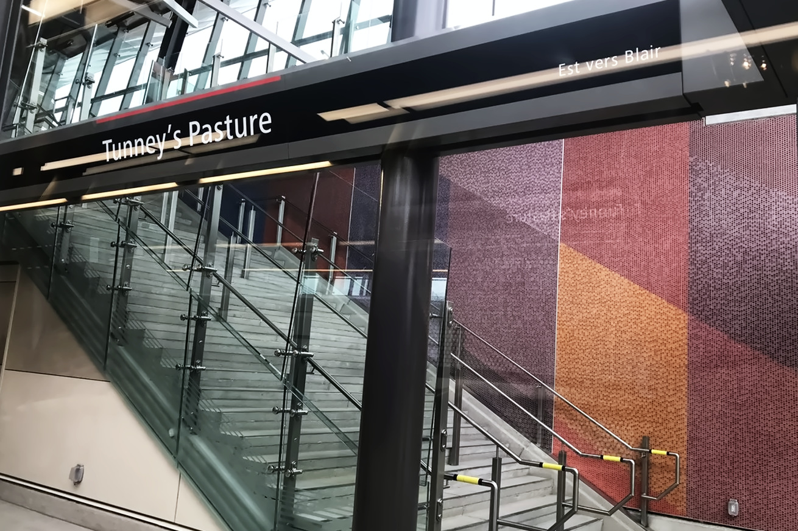
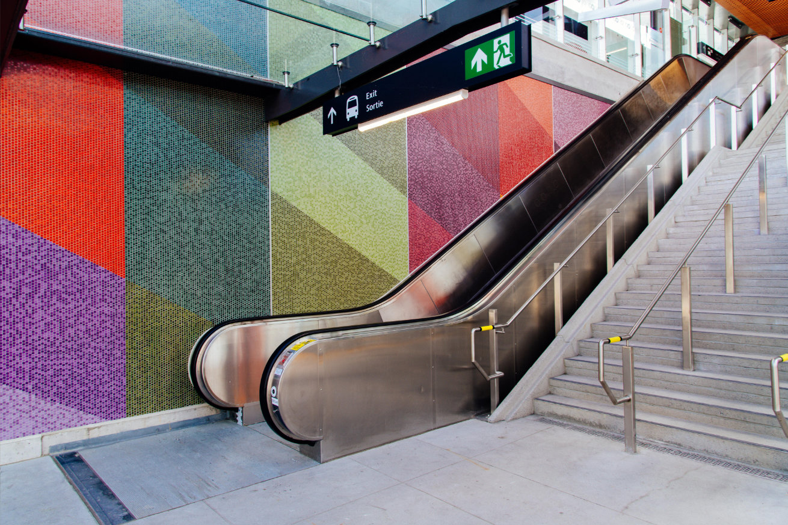
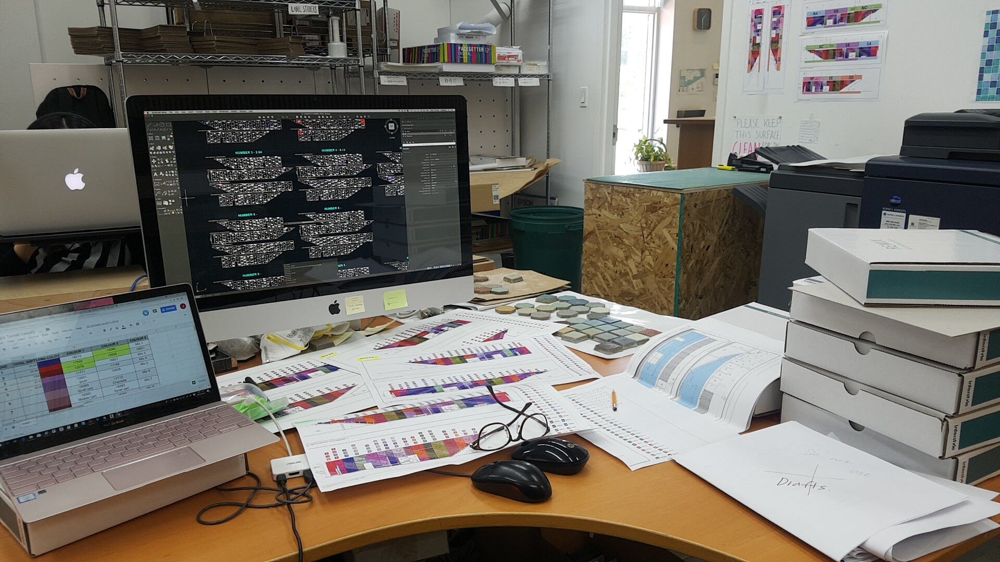
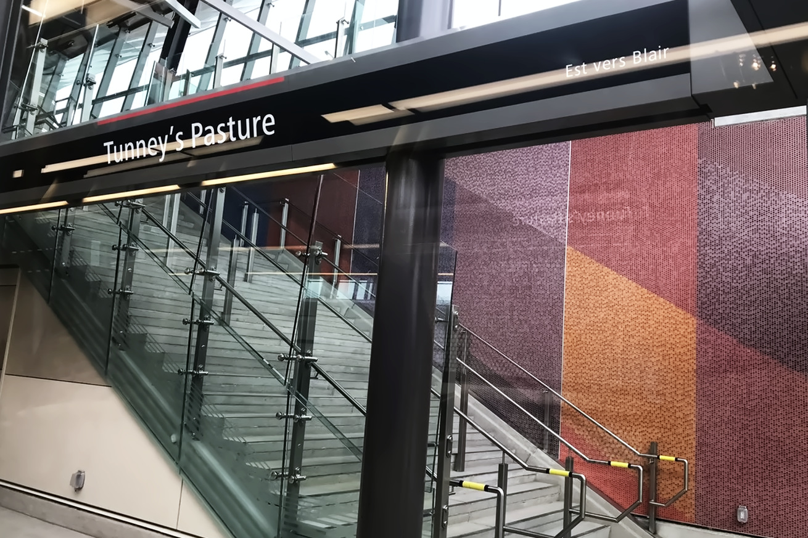
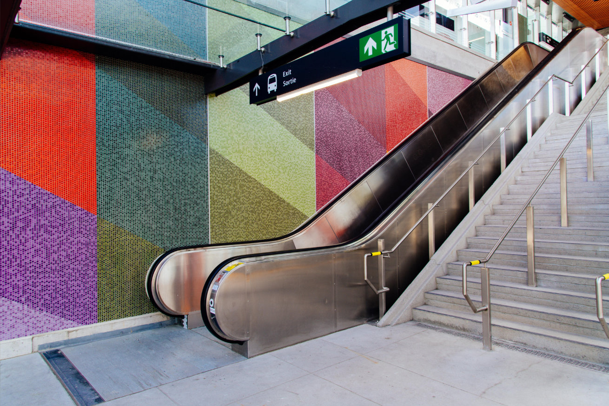
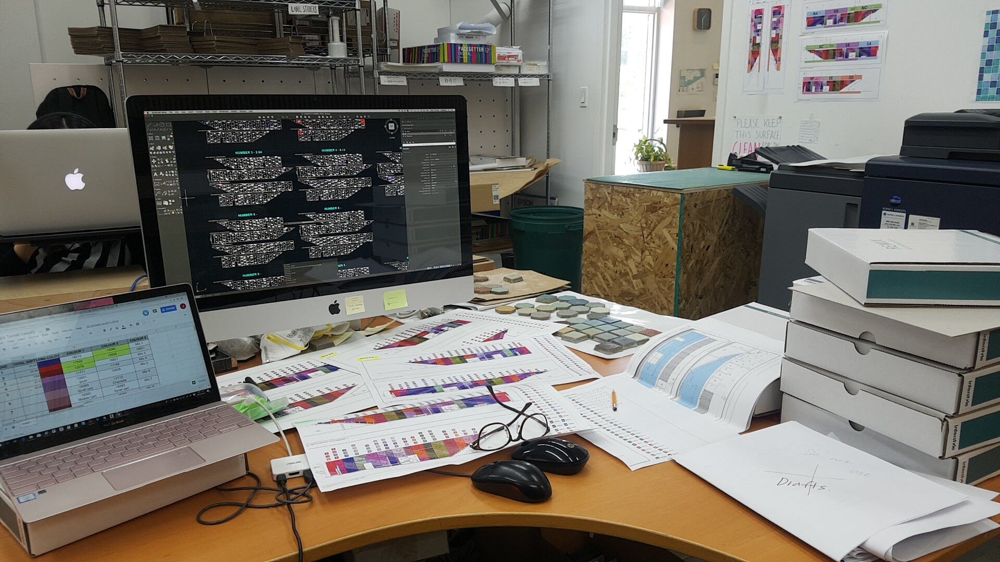

Interstyle Ceramic & Glass Co.
Vancouver. BC. Canada (2018)
As Design Developer at Color Lab, I calculated and visualized Tunny’s Pasture Tunnel project-6,000 sq ft
for better artistic tile installation in Ottawa’s subway station using AutoCAD and Illustrator.
I developed diverse colors of tiles, and contributed to completing 240 color collections,
upcycled ceramic products, and solved various complex customizing projects by inventing color, researching, and designing
 




